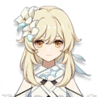
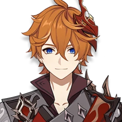
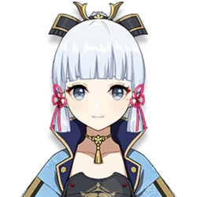
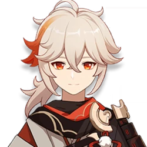
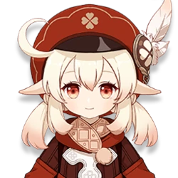
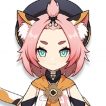
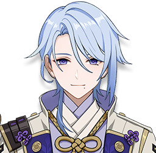
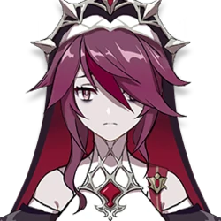

𝕲𝖊𝖓𝖘𝖍𝖎𝖓 𝕴𝖒𝖕𝖆𝖈𝖙
Люмин
Путешественник/Путешественница — играбельный персонаж и протагонист Genshin Impact. В начале игры близнецы, брат и сестра, путешествующие по разным мирам, попадают в ловушку Неизвестного Бога, которая захватывает одного из близнецов и запечатывает силы другого, оставляя их выброшенными в Тейвате. На протяжении всей истории Путешественника(цу) сопровождает Паймон.
Путешественник/Путешественница — играбельный персонаж и протагонист Genshin Impact. В начале игры близнецы, брат и сестра, путешествующие по разным мирам, попадают в ловушку Неизвестного Бога, которая захватывает одного из близнецов и запечатывает силы другого, оставляя их выброшенными в Тейвате. На протяжении всей истории Путешественника(цу) сопровождает Паймон.
Тарталья
Тарталья, также известен как «Чайльд» — играбельный Гидро персонаж в Genshin Impact. Познакомьтесь с Тартальей, непредсказуемым воином из Снежной!Не питайте иллюзий, что вы понимаете его подлинные намерения. Не забывайте, что за этой невинной внешностью скрывается безжалостное орудие для убийства.
Тарталья, также известен как «Чайльд» — играбельный Гидро персонаж в Genshin Impact. Познакомьтесь с Тартальей, непредсказуемым воином из Снежной!Не питайте иллюзий, что вы понимаете его подлинные намерения. Не забывайте, что за этой невинной внешностью скрывается безжалостное орудие для убийства.
Аяка
Камисато Аяка — играбельный Крио персонаж в Genshin Impact. Дочь клана Камисато комиссии Ясиро. Благородна, изящна, мудра и сильна. Всегда честна и учтива. Обожаемая народом Инадзумы, она заслужила прозвище «Сирасаги Химэгими».
Камисато Аяка — играбельный Крио персонаж в Genshin Impact. Дочь клана Камисато комиссии Ясиро. Благородна, изящна, мудра и сильна. Всегда честна и учтива. Обожаемая народом Инадзумы, она заслужила прозвище «Сирасаги Химэгими».
Кадзуха
Каэдэхара Кадзуха — играбельный Анемо персонаж в Genshin Impact. Странствующий самурай из Инадзумы, скромный и мягкий. За молодой и беззаботной внешностью скрывается полное невзгод прошлое. На первый взгляд беспечный юноша строго следует собственному кодексу поведения.
Каэдэхара Кадзуха — играбельный Анемо персонаж в Genshin Impact. Странствующий самурай из Инадзумы, скромный и мягкий. За молодой и беззаботной внешностью скрывается полное невзгод прошлое. На первый взгляд беспечный юноша строго следует собственному кодексу поведения.
 Рэйзор
РэйзорРэйзор — играбельный Электро персонаж в Genshin Impact. В Мондштадте говорят, что он сирота, которого воспитали волки. Ещё говорят, что он волчий дух в человеческом обличье. Этот мальчик комфортнее всего чувствует себя в дикой природе, сражаясь громом и когтями. По сей день в лесной чаще мальчик охотится со стаей волков, полагаясь только на свои животные инстинкты.
Кли
Кли — играбельный Пиро персонаж в Genshin Impact. Рыцарь Искорка из Ордо Фавониус! Повсюду за ней следуют вспышки и взрывы!Но весь огонь затухает, как только появляется Джинн.Одиночное заключение даёт время подумать над новыми формулами пороха...Но всё равно свобода – лучше!
Кли — играбельный Пиро персонаж в Genshin Impact. Рыцарь Искорка из Ордо Фавониус! Повсюду за ней следуют вспышки и взрывы!Но весь огонь затухает, как только появляется Джинн.Одиночное заключение даёт время подумать над новыми формулами пороха...Но всё равно свобода – лучше!
Диона
Диона — играбельный Крио персонаж в Genshin Impact. Невероятно популярный бармен таверны «Кошкин хвост», восходящая звезда винной индустрии Мондштадта и величайший бунтарь против традиционных устоев. Обладательница кошачьего хвоста и милых ушек родилась в Спрингвейле. Любой коктейль, который она готовит собственноручно, выходит божественно вкусным. Но, учитывая отвращение Дионы к алкоголю, талант её - благословение или проклятие?
Диона — играбельный Крио персонаж в Genshin Impact. Невероятно популярный бармен таверны «Кошкин хвост», восходящая звезда винной индустрии Мондштадта и величайший бунтарь против традиционных устоев. Обладательница кошачьего хвоста и милых ушек родилась в Спрингвейле. Любой коктейль, который она готовит собственноручно, выходит божественно вкусным. Но, учитывая отвращение Дионы к алкоголю, талант её - благословение или проклятие?
Аято
Камисато Аято — играбельный Гидро персонаж в Genshin Impact. Действующий глава клана Камисато, а значит и комиссии Ясиро. У него всегда есть способ достичь своей цели. Однако мало кто понимает, что это за цель, к которой он так стремится.
Камисато Аято — играбельный Гидро персонаж в Genshin Impact. Действующий глава клана Камисато, а значит и комиссии Ясиро. У него всегда есть способ достичь своей цели. Однако мало кто понимает, что это за цель, к которой он так стремится.
 Горо
ГороГоро — играбельный Гео персонаж в Genshin Impact. Генерал Ватацуми. Заслужив уважение и непререкаемый авторитет, он остаётся скромным лидером. Это генерал, которому безгранично доверяют подчинённые, тот, с кем можно без стыда поделиться чувствами.
Розария
Розария - сестра церкви Фавония в Мондштадте. Кроме одеяния Розарии ничто не напоминает о её принадлежности церкви. Холодна и остра, как клинок. Уходит, когда ей заблагорассудится, не сказав ни слова. У неё важная миссия, вот только никто не понимает какая...
Розария - сестра церкви Фавония в Мондштадте. Кроме одеяния Розарии ничто не напоминает о её принадлежности церкви. Холодна и остра, как клинок. Уходит, когда ей заблагорассудится, не сказав ни слова. У неё важная миссия, вот только никто не понимает какая...